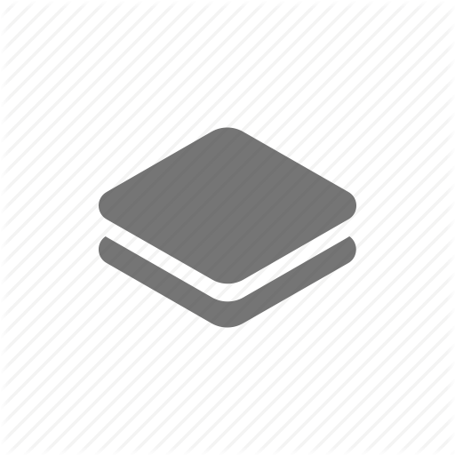

Geo Formaten
Wat is een geo object en hoe kan je hiermee werken?
Hier komt een beschrijving die nog gevuld moet worden
Screencast
Content
Activity
Opdracht: Hoe werken deze objecten
Hier komt je content

GisHub
Geo objecten
Welke geo objecten zijn er?
Geo formaten
Welke geo formaten zijn er?
WKT
GML
Shape
Geo webservices
Welke geo webservices zijn er?
Geo tools
Welke geo tools zijn er?
Tiles
Hoe werkt een tiles berekening?